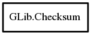

Checksum
Object Hierarchy:

Description:
[ Compact ]
public class Checksum
An opaque structure representing a checksumming operation.
To create a new GChecksum, use Checksum. To free a GChecksum, use
g_checksum_free.
Content:
Static methods:
Creation methods:
Methods:
- public Checksum copy ()
Copies a Checksum.
- public void update (uchar[] data, size_t length)
Feeds data into an existing Checksum
.
- public unowned string get_string ()
Gets the digest as an hexadecimal string.
- public void get_digest (uint8[] buffer, ref size_t digest_len)
Gets the digest from this as a raw
binary vector and places it into buffer.